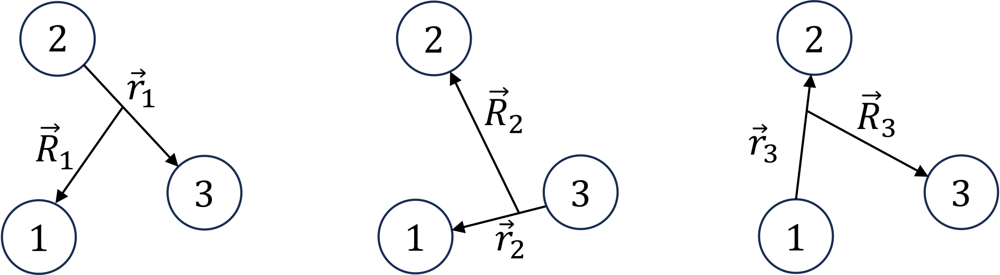

Gaussian Basis Functions
This page provides an overview of the centered Gaussian basis functions used for 2‑ and 3‑body quantum calculations in our package. It covers standard real-range Gaussians, an extension to complex-ranged Gaussians, and the methods used for higher angular momenta in three-body systems. A more extensive introduction, however limited to 3D systems can be found in [1].
Two-Body
Real-Range (Centered) Gaussian basis functions
The Gaussian expansion method relies on expanding an unknown state into a set
\[|\phi\rangle = \sum_\alpha c_\alpha |\phi_\alpha\rangle\]
of Gaussian basis functions $|\phi_\alpha\rangle$ . They are originally defined in 3D as
\[\phi_\alpha^{(3D)}(r) = N_{n,l}\, r^l e^{-\nu_n r^2} Y_{l,m}(\theta,\phi)\]
with the multi-index $\alpha = \{n,l\}$. This definition can be extended to 1D and 2D systems by considering (the normalization depends on the dimensionality)
\[\phi_\alpha^{(1D)}(r) = N_{n,l}\, r^l e^{-\nu_n r^2} \\ \phi_\alpha^{(2D)}(r) = N_{n,l}\, r^l e^{-\nu_n r^2} e^{im\phi}.\]
In 3D, the index $l$ denotes the angular momentum. In 1D, we can associate even and odd values of it to the parity or symmetry of a two-body state. The index $n$ is associated with the Gaussian ranges $\nu_n$ which are chosen in a geometric progression
\[\nu_n = 1/r_n^2, \qquad r_n = r_1 a^{n-1}, \qquad a = \left(\frac{r_{n_{max}}}{r_1} \right)^{1/(n_{max}-1)}\]
defined by the parameters nmax, r1, rnmax. This choice allows for a large function space, while keeping a low number of numerical parameters. Th series of ranges is created in the function buildnu
Using Gaussian basis functions allows to treat many steps fully analytically, and is especially useful for 3-body calculations. However, they are not orthogonal which implies that finding the solution to a few-body problem requires solving a generalized eigenvalue problem, and not a standard one. For this, we provide the function eigen2step, which is similar to eigen(A,B), but it removes eigenvalues of B below a certain threshold, to cure a possibly ill-posed problem. Such a situation can arise if a set of too many basis functions with similar ranges is used.
Complex-Ranged Gaussians
For oscillatory states, e.g. highly excited states or metastable resonant states, it can be difficult to capture their details with standard Gaussians basis functions. A simple extension suggested in [1] are complex-ranged Gaussians which are obtained from the standard real-ranged ones by the transformation
\[\nu \to \nu (1 \pm i\,\omega).\]
This allows reusing the same code structure as for real-ranged Gaussians. Note that to ensure a real wave function, always the pair of both complex shifts is used, and hence the number of basis functions is twice the one defined in num_params. Complex-ranged Gaussians can be used with the optional keyword argument cr_bool = 1 when calling the solver.
Three-Body
Jacobi Coordinates and Faddeev Components

Figure 1: Three sets of Jacobi coordinates for a three-body system.
For three-body systems we employ Jacobi coordinates. This allows to describe the full system inits center-of-mass frame by two relative coordinates. However, there are three equivalent sets of these coordinates, related to the three different partitions of three particles into a pair of two, and a single one, see Fig. 1. In few-body physics it is therefore common to decompose any given three-body state into a sum
\[|\Psi\rangle = |\Psi^{(1)}\rangle + |\Psi^{(2)}\rangle + |\Psi^{(3)}\rangle\]
of Faddeev components $|\Psi^{(i)}\rangle$ (sometimes called rearrangement channels), each described in a different Jacobi set $\{\vec{r}_i,\vec{R}_i\}$. In case some particles do not interact, or two or more are identical, the number of Faddeev components can be reduced. The code does this automatically.
Each component is then expanded into a set
\[\Psi^{(i)}(\vec{r}_i,\vec{R}_i) = \sum_{\alpha=1}^{\alpha_{max}} A_\alpha \psi_\alpha^{(i)}(\vec{r}_i,\vec{R}_i)\]
of basis functions $\psi_\alpha^{(i)}$ which itself are composed of products of two functions
\[\psi_\alpha^{(i)}(\vec{r}_i,\vec{R}_i) = \phi_\alpha(\vec{r}_i) \Phi_\alpha(\vec{R}_i).\]
These functions are each defined as in the two-body case (Two-Body)
\[\phi_\alpha(\vec{r}) = N_{l,m} r^l e^{-\nu_n r^2} Y_{l,m}(\hat{r})\]
\[\Phi_\alpha(\vec{R}) = N_{L,M} R^L e^{-\lambda_N R^2} Y_{L,M}(\hat{R})\]
where now $\alpha = \{n,l,N,L\}$. For 1D and 2D systems, the spherical harmonics are simply replaced by $e^{i m \varphi}$ or 1, respectively.
The basis is automatically constructed based on the inputs nmax,r1,rnmax,Nmax,R1,RNmax from gem_params in num_params.
The decomposition into different Faddeev components requires that we have to compute matrix elements of the form
\[\langle \Psi^{(a)} | \hat{O}^{(c)} |\Psi^{(b)}\rangle\]
with basis functions and operators in possibly different Jacobi sets $a,b,c$. Owing to the Gaussian form, this can be done readily for s-wave states, since the Gaussian form is preserved when transforming from one set to another.
Higher Angular Momenta via Infinitesimally Shifted Gaussians
If higher angular momenta are required, the transformation between different Jacobi sets quickly becomes laborious due to the presence of multiple spherical harmonics. To avoid this, the code makes use of so-called infinitesimally shifted Gaussian basis functions, to express the spherical harmonics in terms of several Gaussians with infinitesimal shift. This shift is treated analytically before computing the matrix elements. More details on this type of basis functions can be found in the review article [1]. We note that this treatment is only required in 3D. In 1D, matrix elements of different Jacobi sets can be computed more easily. Hence, we have two separate modules, GEM3B1D for 1D, and ISGL for 3D. Three-body systems in 2D are currently not supported.
Home References
This page cites the following references:
- [1]
- E. Hiyama, Y. Kino and M. Kamimura. Gaussian Expansion Method for Few-Body Systems. Prog. Part. Nucl. Phys. 51, 223–307 (2003).
Also see the full bibliography for further references cited throughout this documentation.